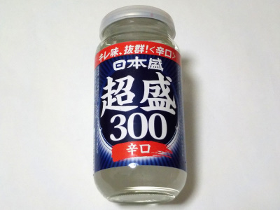

兵庫県西宮市用海町4番57号
更新日 : 2026/07/11

あっさりとしていて飲みやすい日本酒です。
アルコール度数は普通にあるんですが、飲んだ時にアルコールの匂いとか味があまりしません。なので飲み過ぎに注意です。
2023/10/04 付いてるキャップが硬めでしっかり閉まるので、残っても管理しやすいです。飲む分量を決めて飲んだら経済的だと思いました。
2026/07/11 おつとめ品が税込み185円だったので買いました。まろやかなとろみが少しあり、これはこれで美味しいって思いました。
【おいしいものを食べよう。】【たくさん寝よう。】
【ソロ活をしよう!】【季節感のあることをしよう。】【動画視聴はほどほどに。】【当サイトの全てのコンテンツは無断転載禁止です。】